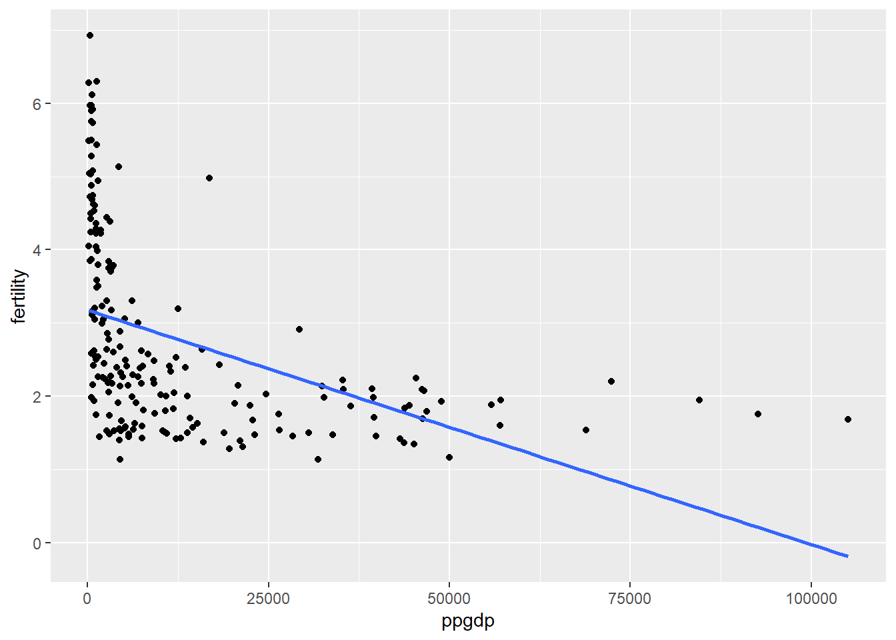
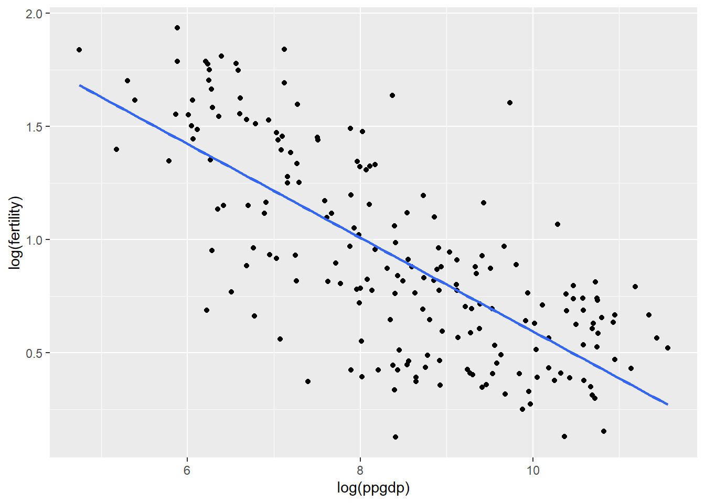
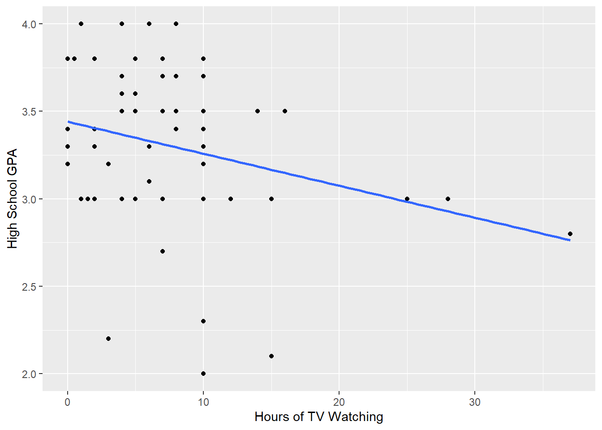

-- Attaching packages --------------------------------------- tidyverse 1.3.2 --
v ggplot2 3.4.0 v purrr 0.3.5
v tibble 3.1.8 v dplyr 1.0.10
v tidyr 1.2.1 v stringr 1.5.0
v readr 2.1.3 v forcats 0.5.2
-- Conflicts ------------------------------------------ tidyverse_conflicts() --
x dplyr::filter() masks stats::filter()
x dplyr::lag() masks stats::lag()
Code
library(car)
Loading required package: carData
Attaching package: 'car'
The following object is masked from 'package:dplyr':
recode
The following object is masked from 'package:purrr':
some
United Nations (Data file: UN11in alr4) The data in the file UN11 contains several variables, including ppgdp, the gross national product per person in U.S. dollars, and fertility, the birth rate per 1000 females, both from the year 2009. The data are for 199 localities, mostly UN member countries, but also other areas such as Hong Kong that are not independent countries. The data were collected from the United Nations (2011). We will study the dependence of fertility on ppgdp.
A
Identify the predictor and the response.
Predictor: x = ppgdp Response: y = fertility
B
Draw the scatterplot of fertility on the vertical axis versus ppgdp on the horizontal axis and summarize the information in this graph. Does a straight-line mean function seem to be plausible for a summary of this graph?
Code
ggplot(UN11, aes(y = fertility, x = ppgdp)) +geom_point()+stat_smooth(method ="lm", se =FALSE)
`geom_smooth()` using formula = 'y ~ x'

This distribution has more of a curve to it rather than a straight line. The fitted line does not seem accurately to reflect the distribution.
C
Draw the scatterplot of log(fertility) versus log(ppgdp) using natural logarithms. Does the simple linear regression model seem plausible for a summary of this graph? If you use a different base of logarithms, the shape of the graph won’t change, but the values on the axes will change.
Code
ggplot(UN11, aes(y =log(fertility), x =log(ppgdp))) +geom_point()+stat_smooth(method ="lm", se =FALSE)
`geom_smooth()` using formula = 'y ~ x'

Yes the simpler linear regression does seem more plausible to fit and describe this distribution.
Question 2
Annual income, in dollars, is an explanatory variable in a regression analysis. For a British version of the report on the analysis, all responses are converted to British pounds sterling (1 pound equals about 1.33 dollars, as of 2016).
A
How, if at all, does the slope of the prediction equation change?
The slope would not change in this conversion but the y intercept would.
B
How, if at all, does the correlation change?
Correlation would not change as its standardized, its value does not depend on the unit of measurement.
Question 3
Water runoff in the Sierras (Data file: water in alr4)
Can Southern California’s water supply in future years be predicted from past data? One factor affecting water availability is stream runoff. If runoff could be predicted, engineers, planners, and policy makers could do their jobs more efficiently. The data file contains 43 years’ worth of precipitation measurements taken at six sites in the Sierra Nevada mountains (labeled APMAM, APSAB, APSLAKE, OPBPC, OPRC, and OPSLAKE) and stream runoff volume at a site near Bishop, California, labeled BSAAM.
Draw the scatterplot matrix for these data and summarize the information available from these plots. (Hint: Use the pairs() function.)
This scatterplot shows similiar linear relationships between the precipitation values of OPBPC, OPRC, and OPSLAKE with the stream run off of BSAAM.
Question 4
Professor ratings (Data file: Rateprof in alr4) In the website and online forum RateMyProfessors.com, students rate and comment on their instructors. Launched in 1999, the site includes millions of ratings on thousands of instructors. The data file includes the summaries of the ratings of 364 instructors at a large campus in the Midwest (Bleske-Rechek and Fritsch, 2011). Each instructor included in the data had at least 10 ratings over a several year period. Students provided ratings of 1–5 on quality, helpfulness, clarity, easiness of instructor’s courses, and raterInterest in the subject matter covered in the instructor’s courses. The data file provides the averages of these five ratings. Create a scatterplot matrix of these five variables. Provide a brief description of the relationships between the five ratings.
Code
#head(Rateprof)pairs(Rateprof[,8:12])
From this scatterplot, my first observation is that quality, helpfulness, and clarity all have a positive correlation within themselves. Quality seems to have a positive correlation overall with the other variables. Helpfulness and clarity overall seem to have a positive correlation with other variables, but less direct them quality. Easiness and raterInterest do not reflect a confident correlation overall.
Question 5
For the student.survey data file in the smss package, conduct regression analyses relating (by convention, y denotes the outcome variable, x denotes the explanatory variable)
y = political ideology and x = religiosity,
y = high school GPA and x = hours of TV watching.
(You can use ?student.survey in the R console, after loading the package, to see what each variable means.)
A
Graphically portray how the explanatory variable relates to the outcome variable in each of the two cases
Call:
lm(formula = pi ~ re, data = student.survey)
Residuals:
Min 1Q Median 3Q Max
-2.81243 -0.87160 0.09882 1.12840 3.09882
Coefficients:
Estimate Std. Error t value Pr(>|t|)
(Intercept) 0.9308 0.4252 2.189 0.0327 *
re 0.9704 0.1792 5.416 1.22e-06 ***
---
Signif. codes: 0 '***' 0.001 '**' 0.01 '*' 0.05 '.' 0.1 ' ' 1
Residual standard error: 1.345 on 58 degrees of freedom
Multiple R-squared: 0.3359, Adjusted R-squared: 0.3244
F-statistic: 29.34 on 1 and 58 DF, p-value: 1.221e-06
ii
y = high school GPA and x = hours of TV watching
Code
ggplot(data = student.survey, aes(x=tv, y=hi))+geom_point()+geom_smooth(method ="lm", se =FALSE)+labs(x ="Hours of TV Watching", y ="High School GPA")
`geom_smooth()` using formula = 'y ~ x'

Code
summary(lm(hi~tv, data=student.survey))
Call:
lm(formula = hi ~ tv, data = student.survey)
Residuals:
Min 1Q Median 3Q Max
-1.2583 -0.2456 0.0417 0.3368 0.7051
Coefficients:
Estimate Std. Error t value Pr(>|t|)
(Intercept) 3.441353 0.085345 40.323 <2e-16 ***
tv -0.018305 0.008658 -2.114 0.0388 *
---
Signif. codes: 0 '***' 0.001 '**' 0.01 '*' 0.05 '.' 0.1 ' ' 1
Residual standard error: 0.4467 on 58 degrees of freedom
Multiple R-squared: 0.07156, Adjusted R-squared: 0.05555
F-statistic: 4.471 on 1 and 58 DF, p-value: 0.03879
B
Summarize and interpret results of inferential analyses.
The results in both regressions show they are statistically significant, however, the first graph displays the results as a linear regression better than the second example. A different form of regression would be better to capture the relationship rather than a linear regression.
Source Code
---title: "Homework 3"author: "Alexa Potter"description: "DACSS 603"date: "04/11/2023"format: html: toc: true code-fold: true code-copy: true code-tools: truecategories: - hw3---```{r}library(tidyverse)library(car)library(smss)data("student.survey", package ="smss")df <- student.surveylibrary(alr4)data("UN11", package ="alr4")df <- UN11data("Rateprof", package ="alr4")df <- Rateprofdata("water", package ="alr4")df <- water```# Question 1United Nations (Data file: UN11in alr4) The data in the file UN11 contains several variables,including ppgdp, the gross national product per person in U.S. dollars, and fertility, the birth rate per 1000 females, both from the year 2009. The data are for 199 localities, mostly UN member countries, but also other areas such as Hong Kong that are not independent countries. The data were collected from the United Nations (2011). We will study the dependence of fertility on ppgdp.## A Identify the predictor and the response.Predictor: x = ppgdpResponse: y = fertility## B Draw the scatterplot of fertility on the vertical axis versus ppgdp on the horizontal axisand summarize the information in this graph. Does a straight-line mean function seem tobe plausible for a summary of this graph? ```{r}ggplot(UN11, aes(y = fertility, x = ppgdp)) +geom_point()+stat_smooth(method ="lm", se =FALSE)```This distribution has more of a curve to it rather than a straight line. The fitted line does not seem accurately to reflect the distribution. ## C Draw the scatterplot of log(fertility) versus log(ppgdp) using natural logarithms. Doesthe simple linear regression model seem plausible for a summary of this graph? If you usea different base of logarithms, the shape of the graph won’t change, but the values on theaxes will change. ```{r}ggplot(UN11, aes(y =log(fertility), x =log(ppgdp))) +geom_point()+stat_smooth(method ="lm", se =FALSE)```Yes the simpler linear regression does seem more plausible to fit and describe this distribution. # Question 2 Annual income, in dollars, is an explanatory variable in a regression analysis. For a Britishversion of the report on the analysis, all responses are converted to British pounds sterling (1 pound equals about 1.33 dollars, as of 2016). ## A How, if at all, does the slope of the prediction equation change? The slope would not change in this conversion but the y intercept would. ## B How, if at all, does the correlation change? Correlation would not change as its standardized, its value does not depend on the unit of measurement.# Question 3 Water runoff in the Sierras (Data file: water in alr4) Can Southern California’s water supply in future years be predicted from past data? One factor affecting water availability is stream runoff. If runoff could be predicted, engineers, planners, and policy makers could do their jobs more efficiently. The data file contains 43 years’ worth of precipitation measurements taken at six sites in the Sierra Nevada mountains (labeled APMAM, APSAB, APSLAKE, OPBPC, OPRC, and OPSLAKE) and stream runoff volume at a site near Bishop, California, labeled BSAAM. Draw the scatterplot matrix for these data and summarize the information available from these plots. (Hint: Use the pairs() function.)```{r}head(water)pairs(water[,2:8])```This scatterplot shows similiar linear relationships between the precipitation values of OPBPC, OPRC, and OPSLAKE with the stream run off of BSAAM.# Question 4 Professor ratings (Data file: Rateprof in alr4) In the website and online forum RateMyProfessors.com, students rate and comment on their instructors. Launched in 1999, the site includes millions of ratings on thousands of instructors. The data file includes the summaries of the ratings of 364 instructors at a large campus in the Midwest (Bleske-Rechek and Fritsch, 2011). Each instructor included in the data had at least 10 ratings over a several year period. Students provided ratings of 1–5 on quality, helpfulness, clarity, easiness of instructor’s courses, and raterInterest in the subject matter covered in the instructor’s courses. The data file provides the averages of these five ratings. Create a scatterplot matrix of these five variables. Provide a brief description of the relationships between the five ratings. ```{r}#head(Rateprof)pairs(Rateprof[,8:12])```From this scatterplot, my first observation is that quality, helpfulness, and clarity all have a positive correlation within themselves. Quality seems to have a positive correlation overall with the other variables. Helpfulness and clarity overall seem to have a positive correlation with other variables, but less direct them quality. Easiness and raterInterest do not reflect a confident correlation overall. # Question 5 For the student.survey data file in the smss package, conduct regression analyses relating(by convention, y denotes the outcome variable, x denotes the explanatory variable) (i) y = political ideology and x = religiosity, (ii) y = high school GPA and x = hours of TV watching. (You can use ?student.survey in the R console, after loading the package, to see what each variable means.) ## A Graphically portray how the explanatory variable relates to the outcome variable ineach of the two cases ### i y = political ideology and x = religiosity ```{r}#head(student.survey)#unique(student.survey$pi)#unique(student.survey$re)#class(student.survey$pi) <- "character"#class(student.survey$re) <- "character"student.survey %>%recode(pi, c("very conservative"="7", "conservative"="6", "slightly conservative"="5", "moderate"="4", "slightly liberal"="3", "liberal"="2", "very liberal"="1",.default ="0"))student.survey %>%recode(re, c("every week"="4", "most weeks"="3", "occasionally "="2", "never"="1",.default ="0"))class(student.survey$pi) <-"numeric"class(student.survey$re) <-"numeric"``````{r}ggplot(data = student.survey, aes(x=re, y=pi))+geom_point()+geom_smooth(method ="lm", se =FALSE)+scale_x_continuous(labels=c("every week", "most weeks", "occasionally", "never"),breaks =c(4,3,2,1))+scale_y_continuous(labels =c("very conservative", "conservative", "slightly conservative", "moderate", "slightly liberal", "liberal", "very liberal"),breaks =c(7,6,5,4,3,2,1)) +labs(x ="Religiosity", y ="Political Ideology")``````{r}summary(lm(pi~re, data=student.survey))```### ii y = high school GPA and x = hours of TV watching ```{r}ggplot(data = student.survey, aes(x=tv, y=hi))+geom_point()+geom_smooth(method ="lm", se =FALSE)+labs(x ="Hours of TV Watching", y ="High School GPA")``````{r}summary(lm(hi~tv, data=student.survey))```## B Summarize and interpret results of inferential analyses.The results in both regressions show they are statistically significant, however, the first graph displays the results as a linear regression better than the second example. A different form of regression would be better to capture the relationship rather than a linear regression.